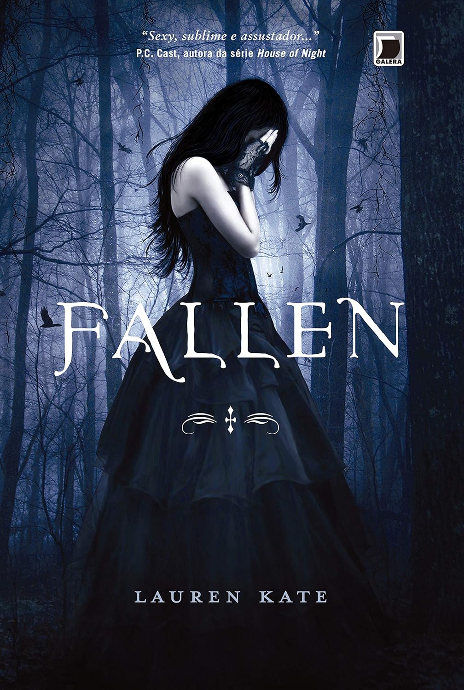
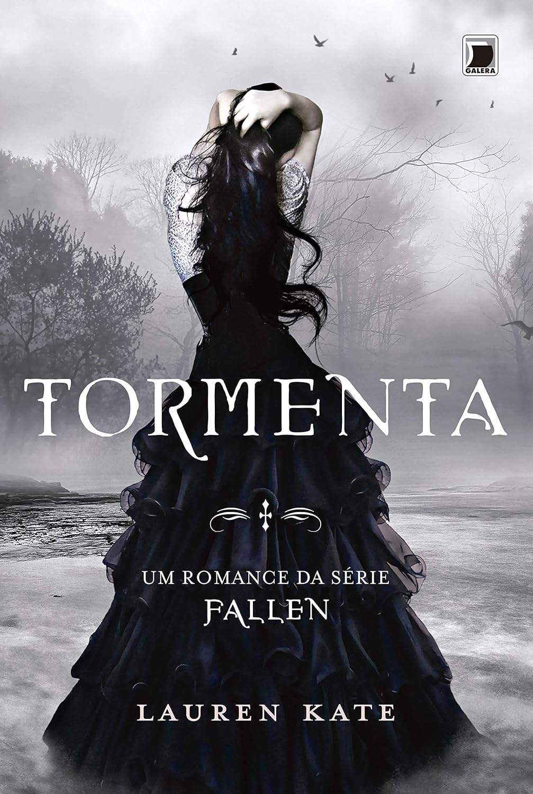

Fallen (Vol. 1)
Lauren Kate
R$ 39,90
Em Fallen, acompanhamos a adolescente Luce, mandada para um reformatório ― apropriadamente batizado de Sword &
Cross ― após a morte do namorado em um incêndio misterioso. Ela suspeita que estranhas sombras negras, que a
atormentam desde a infância, são as verdadeiras responsáveis. Mas quem acreditaria nela?
Na escola, ela encontra o etereamente belo Daniel Grigori, que desperta uma estranha sensação de
reconhecimento: único ponto luminoso num lugar onde celulares são proibidos e há câmeras de vigilância por
todos os cantos. Mas tanta luz hipnotiza a menina, atraída pelo rapaz como uma mariposa pela chama. Ele tenta
se manter afastado de Luce, mas também não consegue. E a verdade promete separá-los como tantas outras vezes ―
com a morte de Luce. Amantes destinados a se encontrar e se perder vida após vida, século após século.

Tormenta - Série Fallen, Volume 2
Lauren Kate
R$ 29,90
Inferno na terra. É assim que Luce se sente quando está longe de seu namorado, um anjo caído, Daniel. Demorou uma eternidade até que eles se encontrassem, mas agora ele lhe diz que precisam se separar novamente. Somente pelo tempo necessário para caçar os Párias ― anjos caídos, como ele, mas que desejam Luce morta mais do que tudo. Daniel leva sua amada mortal até a Shoreline, uma escola na rochosa costa californiana que esconde alunos com talentos únicos: os nefilim, filhos ou descendentes de relacionamentos entre anjos e mortais. Na Shoreline, Luce aprende mais sobre as sombras, e como pode utilizá-las como janelas para suas vidas passadas. Porém, quanto mais Luce descobre todas aquelas Luces anteriores a ela, mais ela suspeita que Daniel está escondendo um segredo ― um segredo mortal. E se a versão de Daniel para o passado dos dois não é exatamente verdadeira? E se Luce devesse estar com outra pessoa ― em uma vida não amaldiçoada por esse amor proibido? Será que ser amada por um anjo vale todo o sofrimento em séculos de existência?
Em Fallen o amor nunca morre.
Paixão - série Fallen, Volume 3
Lauren Kate
R$ 44,90
Antes que Luce e Daniel se conhecessem na Sword & Cross e tivessem lutado contra Imortais e Párias, eles viveram muitas vidas. Luce não sabe mais o que pensar. Seu amor por Daniel é mais forte do que tudo ― exceto, talvez, pela necessidade de saber mais sobre a história dos dois e as razões por trás da terrível maldição que atormenta suas vidas repetidamente.
Após um impulso irracional, Luce se arrisca ao mergulhar em um Anunciador. Ela agora está atravessando séculos, caminhando por suas vidas passadas e entrando em contato com versões passadas de si mesma e de Daniel, de modo a compreender seu destino. Cada século, cada vida, detém uma pista.
Mas Daniel nunca a abandonou, nem a abandonaria. Então, a persegue através do passado, tentando alcançá-la sem descanso, antes que Luce possa tentar reescrever a história... colocando em risco todas as suas encarnações.
Quantas mortes um verdadeiro amor pode aguentar? Quanta dor e desespero? Poderão Luce e Daniel compreender seu passado, de modo a mudar o futuro?